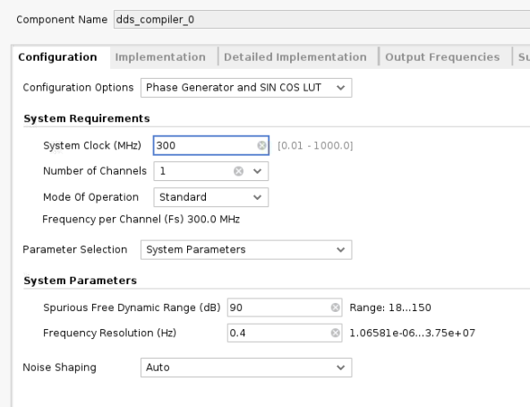
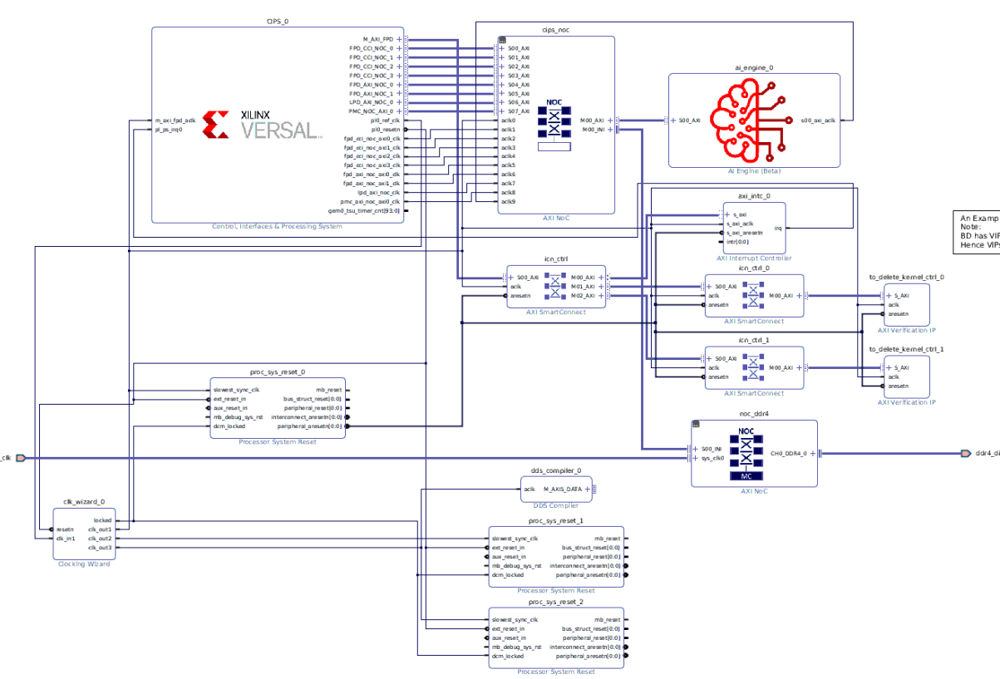
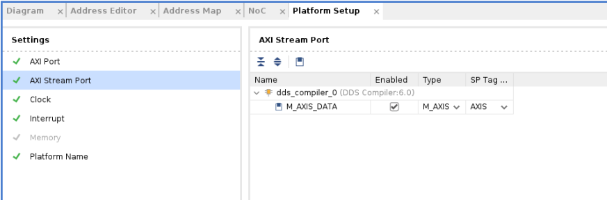

Vitis™ Platform Creation TutorialsSee Vitis™ Development Environment on xilinx.com |
Versal Platform Creation with Custom IP¶
Version: Vitis 2021.2
In this tutorial, you will learn how to add custom IPs into a Versal™ ACAP platform. This tutorial is an ‘add-on’ to the basic Versal platform creation tutorial. So for each step, there will be a pointer to the corresponding part of that tutorial, as required.
This tutorial targets the VCK190 board (see https://www.xilinx.com/products/boards-and-kits/vck190.html).
Overview¶
The tutorial is structured as follows:
Step 1: Create a Hardware Platform¶
In this tutorial, you will use the prebuilt example design for VCK190 board to build the hardware platform. This method saves time instead of having to manually create the IP integrator block design.
Follow the instructions in Versal platform creation tutorial-Step0. You can skip the optional steps.
Step 2: Add Custom IP into the Block Design¶
In this step, you will add a DDS compiler IP into the platform design that you created in the last step. The DDS compiler IP is provided in the Xilinx IP catalog in the Vivado® Design Suite. To see details about this IP, see the product guide, PG141. Because it is a publicly available IP, it supports simulation inherently. If you want to add your own IP cores, you must provide simulation models to support simulation.
Reopen the system block design that was created in last step if you have already closed it.
Click the Add IP (plus icon) button and search for dds. Double click the DDS compiler IP to add it to the canvas.

Configure the DDS IP as follows. Be aware that some of the settings are not a hard requirement and are just for the purpose of this design. The only hard requirement is that there is only a single AXI4-Stream interface for this IP and therefore the phase output port is disabled.
a. Configuration Tab Settings:

b. Implementation Tab Settings:
c. Detailed Implementation Tab Settings:
Keep the default settings for this page.
d. Output Frequency Tab Settings:
You can adjust the frequency value but keep the sample rate in mind. The clocking rate is 300 MHz. If there are too few samples within one cycle, the sine wave cannot be sampled correctly.

Exit the configuration page and connect the
aclkport to theclk_out3signal of clocking wizard.Now the block design should look like the following:

Open up platform setup window and enable the M_AXIS_DATA port. Set the SP Tag to
AXIS- this will be used by the Vitis™ linker to connect to the accelerator.

Regenerate the block design output products.
Export the hardware platform. In the platform type selection page, choose Hardware and hardware emulation to run emulation with this platform.
Step 3: Create the Software Components with PetaLinux¶
In this step, you will create a PetaLinux project that includes the Vitis unified software platform required components. Follow the instructions in Versal platform creation tutorial-Step2.
Step 4: Package the Platform in the Vitis Software Platform¶
In this step, you will package the hardware XSA with software components in the Vitis IDE. Follow the instructions in Versal platform creation tutorial-Step3.
Step 5: Test the Platform¶
In this step, you will build a simple vadd application and run hardware emulation to test the platform. Follow the instructions in Versal platform creation tutorial-Step4, but we will make some modifications.
You just need to run test 2 on that page. After creating the vadd system project, make the following changes.
Open up the
krnl_vadd.cppfile under thesrcfolder of thevadd_kernelsproject. Add the following header files at the beginning of this file. These are used to support the AXIS data type and HLS stream data type.
#include "ap_int.h"
#include "ap_axi_sdata.h"
#include "hls_stream.h"
Define a type named
pktbefore the kernel function definition.
typedef ap_axis<15, 0, 0, 0> pkt;
Add two ports into the top level function. The
dds_inport is an AXI4-Stream type and thewave_outport is an AXI-MM type.
void krnl_vadd(uint32_t* in1, uint32_t* in2, uint32_t* out, int size, int *wave_out, hls::stream<pkt> &dds_in) {
In this design, the data from the DDS IP is not processed. It is just passed to the DDR. To do that, add a few lines to the function body, similar to the following:
for (int i = 0; i < 1024; i++) {
#pragma HLS PIPELINE II = 1
pkt value = dds_in.read();
wave_out[i] = value.data;
}
Now the kernel code modification is complete. Save your work and close the file.
Note: For the complete modification code reference on the
vaddkernel, see kernel code modifications.
To direct the Vitis linker to correctly link the kernel’s AXI stream port with the corresponding interface of the platform, create a configuration file called
system.cfgand add the following lines to it.
[connectivity]
stream_connect = AXIS:krnl_vadd_1.dds_in
This command indicates the connections between two AXI4-Stream ports. The name before the colon must be the master interface while the latter is the name of the slave interface. In this design, the AXIS sptag from platform represents the AXI master side therefore we put it at the front. Here you just need to specify the sptag that was defined during platform creation and the Vitis linker detects it automatically.
The system_cfg file is put under the vadd_system_hw_link project. You can choose other locations but just make sure that you point to it correctly in the binary container settings.
Specify the config file in binary container settings:
Now modify the host code to read back the data from the DDR. Open up the
vadd.cppfile under thesrcfolder of thevaddproject and modify the following items.a. Add header files.
#include "ap_int.h" #include <stdio.h>
b. Create a new
cl_mem bufferfor the DDS output data.cl::Buffer buffer_waveout(context, CL_MEM_WRITE_ONLY, 1024*sizeof(int));
c. Bond the buffer with the kernel.
krnl_vector_add.setArg(narg++,buffer_waveout);
d. Map the host buffer with the device buffer.
int *ptr_waveout = (int *) q.enqueueMapBuffer (buffer_waveout , CL_TRUE , CL_MAP_READ , 0, 1024*sizeof(int));
e. Read the data from the DDR.
q.enqueueMigrateMemObjects({buffer_waveout},CL_MIGRATE_MEM_OBJECT_HOST);
f. Save the data into a file. The data is left shifted by 17 bits because the DDS compiler IP output is 16-bit signed data and the host buffer 32-bit integer data. This is to remove the extra signed bits and keep the actual payload data.
FILE *fp_dout; fp_dout=fopen("wave_out.txt","w"); for (int i = 0; i < 1024; i++) { fprintf(fp_dout,"%d\n",ptr_waveout[i]<<17); } fclose(fp_dout);
g. Unmap the buffer.
q.enqueueUnmapMemObject(buffer_waveout , ptr_waveout);
Note: For the complete modification code reference on the
vaddhost application, see host code modifications.Now run emulation on the modified
vaddapplication. Follow the instructions in Versal platform creation tutorial-Step4 Emulation.After ‘Test Passed’ appears in the console window, copy over the generated
wave_out.txtfile from the QEMU target. First, launch the XSCT console window fromXilinxmenu if you have not already done so.
Connect to the tcf target using the following command:
connect -host 127.0.0.1 -port 1440
Copy the wave_out.txt file from the tcf target to the host machine using the following command:
tfile copy -to-host /mnt/sd-mmcblk0p1/wave_out.txt $(YOUR_DIR)/wave_out.txt
The wave_out.txt file will be copied over to $(YOUR_DIR). Choose a tool to plot the data. A possible option is MATLAB®. If you do not have MATLAB installed, other third-party tools, such as Excel, also provide a similar feature. Use your preferred method to print out a sine wave.

Support¶
GitHub issues will be used for tracking requests and bugs. For questions go to forums.xilinx.com.
License¶
Licensed under the Apache License, Version 2.0 (the “License”); you may not use this file except in compliance with the License.
You may obtain a copy of the License at http://www.apache.org/licenses/LICENSE-2.0
Unless required by applicable law or agreed to in writing, software distributed under the License is distributed on an “AS IS” BASIS, WITHOUT WARRANTIES OR CONDITIONS OF ANY KIND, either express or implied. See the License for the specific language governing permissions and limitations under the License.
XD019 | © Copyright 2021 Xilinx, Inc.